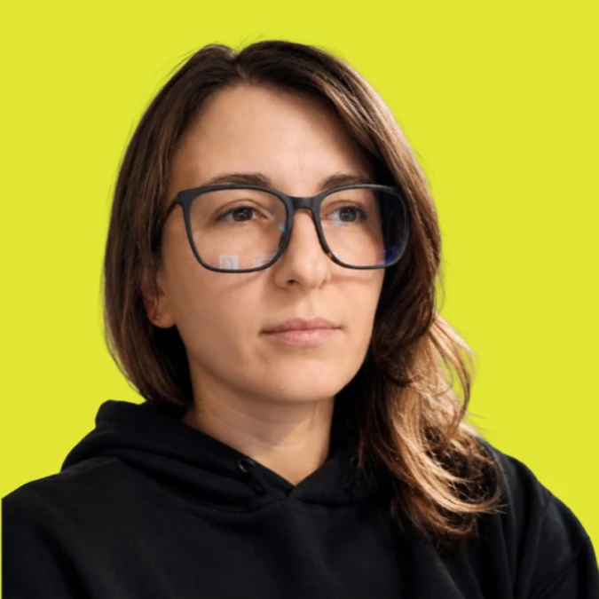

Міський застосунок Харкова. Чотири кольорові режими на одних токенах, текст до 160%.
Читати кейс – Open KharkivВ Involve.software
Product Designer
Open KharkivМіський застосунокTripStoneAI-планувальник подорожейNumaМедкарта родиниUlovoЗастосунок для рибалокLunoraФінансовий застосунок
Проєктую B2B SaaS і мобільні застосунки для людей –
від структури та сценаріїв до готового інтерфейсу.

Open Kharkiv
Редизайн міського застосунку, чотири режими.
No visuals – NDA

Застосунок для здоровʼя всієї родини: план дня, медкарти й лист лікарю в один тап. У розробці.
Читати кейс – Numa
AI-планувальник подорожей: дискавері в Amplitude, конкуренти й перевірка доступності.
Читати кейс – TripStone
Платежі за підписки, побудовані навколо станів обробки, помилки й таймауту, доопрацьовані після чотирьох юзабіліті-тестів.
Читати кейс – Lunora
Прогноз клювання для рибалок: активність по годинах, погода і Місяць. 12 флоу й 86 екранів, у розробці.
Читати кейс – Ulovo
Фокус
У чому я найсильніша
Три вкладки й один «+».
Numa: Головна, Медкарти й Календар на щодень і один «+», який додає будь-який з 11 типів записів.
Читати кейсОбробка, помилка, таймаут.
Lunora: двоє з чотирьох не розуміли, що відбувається під час довгої обробки. Тож я додала кільце прогресу з галочками – далі повторний тест.
Читати кейсЧитається і на 160%.
Open Kharkiv: чотири кольорові режими на одних токенах, а інтерфейс тримається, коли текст збільшують до 160%.
Читати кейс
Про мене
Зрозумілі інтерфейси для складних задач.

- Product designer в Involve.software
- Middle з листопада 2025
- FinTech, HealthTech і CivicTech
- Фриланс з 2024
- Живу у Фано, Італія
- Англійська B1, італійська B1
- Магістр з дизайну, ЛНАМ, Львів
- Projector Institute, 2023–2025
- Курси: веб, UX, мобільні застосунки
Пишу й виступаюУсі статті на DOU
- DOUСтаттяЧому красивий інтерфейс не знімає напругу користувачаТравень 2026 · 2 362 перегляди
- DOUСтаттяТестувала GitHub Integration у Figma Make: AI прочитав репозиторій, але вигадав нового дизайнераЛипень 2026 · також англійською на Medium
- DOU LiveСтрімЯк покращити портфоліо дизайнера – розбір реальних робітЗапис за донат на «Азов»Донат Отримати запис
Досвід
Проєктую, об’єдную, ділюся знаннями
- 5
мобільних застосунків
FinTech, HealthTech, CivicTech, Outdoor
- 10
років власного бренду
N.I.N.A.Design, 2013–2024
- 32
комерційні сайти
Від лендингів до GORA з бронюванням
- 100+
годин менторства
8 дизайнерів, індивідуально
- 800+
учасників спільноти
Відгуки
Що кажуть люди
«Ніна – чудова менторка. Ми знайшли спільну мову з першої ж сесії. Вона вдумливо, по-вчительськи підійшла до того, що треба змінити в моєму портфоліо, і сьогодні я працюю зовсім не так, як раніше.»
«Вона показала, як робити дослідження, але не водила мене за руку: я мала відстоювати свою позицію й пояснювати дизайн-рішення. Вона допомогла мені побачити, що в дизайні ніхто не скаже тобі точно, що робити, тож треба самій розуміти, чому все працює саме так. Багато тем я досліджувала сама – з власного бажання, а не з обов’язку. Ми рухалися в моєму темпі, без шкільних дедлайнів, і домовитися про сесії було легко.»
«Вона ніколи не дає готових відповідей – завжди ставить правильні запитання й змушує переосмислювати, а це веде до глибокого розуміння й дивовижних результатів.»
«За час менторства я стала впевненішою у своїх дизайн-рішеннях і свідомішою в тому, як підходжу до задач.»
«Працював разом з Ніною в одній компанії, її тонкий підхід до розуміння дизайну запав мені душу»